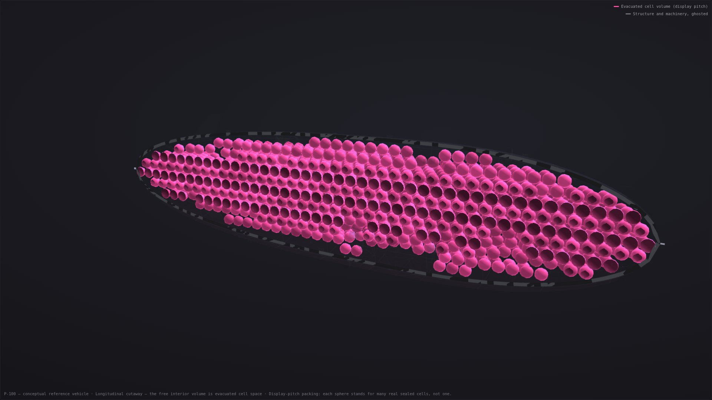
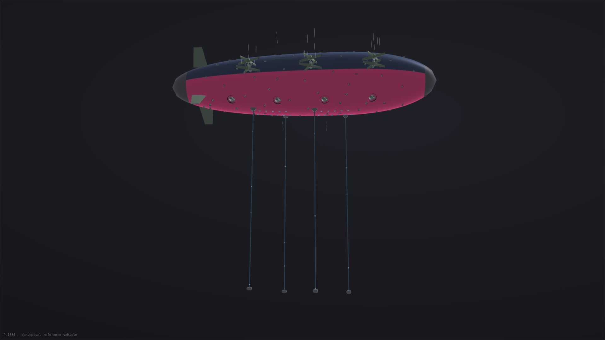
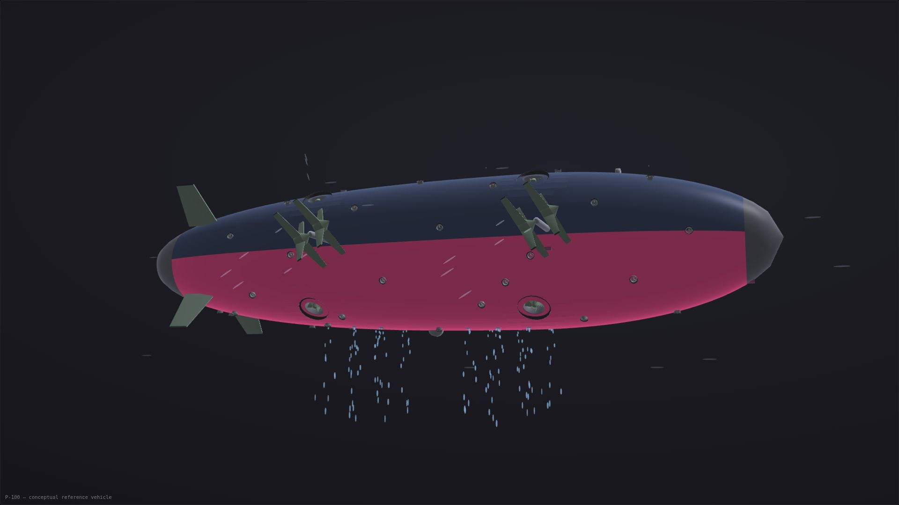
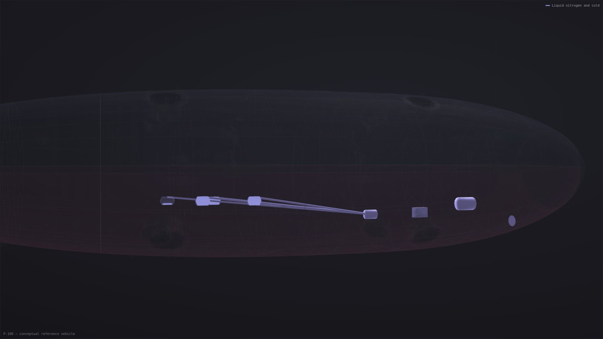

Pink Robotics · Autonomous fleet monitor · how it works
This page explains the fleet monitor's model through its assumptions, dials and a worked cycle. The fleet is simulated and never flew. Nothing here says any fire would have burned differently.
The fleet monitor has the map and its view controls. The engineering page explains the structural model and the bench article.
Four pictures carry the whole concept; every section below is these four ideas taken seriously. Each image is a render of the working 3D reference model. The fleet monitor animates that same model when a fleet is simulated.
The flight model assumes a hull that floats; no drawn hull does. See the float case.

One membrane laid straight on carbon hoop rings, wrapped around an empty two-walled truss. The drawn hull does not float. The ship comparison gives both bases and altitudes, beside the tests and missing mass lines that could change them. No lifting gas is required; compartment membranes are intended to limit a breach. The render is the first generation, kept for the comparison: a hull filled with cells.

Pump pods on 300 m hoses push a full payload up while the ship holds station — it never lands, never scoops, never touches the water itself.

Releasing the payload makes the ship instantly buoyant: delivery and escape are one manoeuvre, powered by the water leaving.

To descend again it liquefies nitrogen from the air on the way home — ballast made mid-flight, returned to the sky at the next fill.
The live view reads this site's mirror of BC Wildfire Service fire points and perimeters. Dated views replay captured records; the exercise uses invented fires. Some views show a record without a fleet, or nothing when their data cannot be read. When a fleet is simulated, its configured pool has sixteen hulls: ten P-100s, five P-1000s, and one P-10000. Each simulated mission follows the model's cycle. The arithmetic section explains selected formulas and assumptions. Selecting a ship, fire, or used water source opens its explanation in the monitor. The fleet is simulated and never flew.
The allocator considers eligible out-of-control fires, their size, the available hull classes and water distance. On fleet views, eligible fires without a hull are counted as waiting. In the simulation, held and under-control fires get nothing. In the monitor, selecting a listed hull follows it on the map. Selecting a class name highlights that type across the province. Protected fires and routes are excluded before dispatch; a missing guard prevents all fleet simulation.
The proposed vehicle is a mass-adaptive electric aircraft built around permanent vacuum lift. The lifting volume is intended to stay evacuated; it is structure, not machinery. The ship changes its mass and force budget. Water in, water out, nitrogen liquefied from the air as ballast, rotors, aerodynamics, and altitude. The characteristic wildfire mission is one loop of that budget:
Drop low. Escape upward. Return on a nominal route. Force the vehicle into hose range. Let the next load of water pull it down.
A vehicle this large and this structurally light should be assumed intolerant of contact with water, waves, trees, docks or debris. So it does not land and it does not skim. It holds position at altitude and lowers a long hose with a submerged intake pod. The pod carries redundant electric pumps at the wet end; a pump on board could not suction-lift a water column hundreds of metres. Screens, cameras, depth sensing, and an emergency release are proposed parts of the pod. The pod is intended to reach the water while the lifting structure stays above it.
As water is pushed up the hose, the ship gets heavier and its net positive buoyancy falls. The downforce it was spending to hold itself low is progressively handed over to the payload itself. It only ever needs to force itself into hose range; incoming water does the rest of the pulling down.
Avoiding severe convection remains a design requirement. Geometric targets start from the fire edge; available satellite detections can replace them on the live view. Water leaves from many distributed tanks, symmetrically, around the centre of buoyancy. Dropping a full payload instantly makes the ship payload-weight buoyant. The design uses the resulting surplus lift: the surplus lift becomes a deliberate, pre-planned climb away from the dangerous low-altitude environment.
The model computes retained water and nitrogen ballast from the configured descent assumptions. The model prescribes the climb profile. An emergency dump and its controlled recovery remain design questions.
After the drop the ship is light by design, and something has to bring it back to hose range. Three levers work together. The cryogenic plant is modelled to liquefy nitrogen during the return leg, adding ballast that occupies tank volume. The large vectorable rotors can produce temporary downforce. Once the hose is in the water, every tonne pumped aboard replaces a tonne of forced descent. Liquid nitrogen is ballast, a controllable mass state, a cold reservoir, and a partially recoverable battery. Warmed back through heat exchangers and expanded through a turbine, it returns a fraction of the electricity it cost. That fraction is a number this page shows rather than hides.
The ballast system has one job: add tonnes the Mind can dial, aboard a vehicle that is mostly made of nothing. That sets the requirements. The store has to be dense at atmospheric pressure, because every cubic metre ballast occupies is a cubic metre of lift spent housing it. It has to be harvestable from the air mid-flight, because the ship cannot land to take ballast on. And it has to be safe inside a printed polymer and carbon-fibre airframe whose destination is a fire.
Compressed air fails on mass. A tank strong enough to hold a tonne of air at pressure is itself on the order of a tonne of structure. Pressure vessels pay for their contents in wall. The separate hull of record is already too heavy before equipment. Its structural mass is not an available tank allowance. Buying mass there spends the one budget the project cannot spare. A cryogenic liquid sits at one atmosphere in a thin insulated tank: 808 kg of nitrogen per cubic metre, and the tank is a rounding error.
Liquid air is the tempting one. Skip the separation step and liquefaction gets cheaper per kilogram. That is the economy grid-scale liquid-air energy storage runs on. But liquid air is about 21% oxygen, and it does not stay 21%. Nitrogen boils at 77 K, oxygen at 90 K, so a standing tank boils its nitrogen off first and the liquid that remains enriches toward liquid oxygen. That is why cryogenic practice treats aged liquid air as LOX. Aboard this vehicle that property is disqualifying three times over:
Nitrogen is the boring four-fifths of every breath the intake takes. It is inert. A leak or vent near the fire adds no oxidizer. Boil-off stays pure instead of concentrating a hazard, and ground handling follows routine industrial practice rather than LOX discipline. The separation column hands the oxygen straight back to the sky rather than storing it, and its energy cost is already priced into the 0.45 kWh/kg dial in section 04. The modest discount liquid air offers is the price of not flying a slowly concentrating oxidizer through a fire in a flammable airframe — a bad trade at any efficiency. (Argon would be denser ballast still, and just as inert, but air offers only one percent of it; nitrogen is what the sky actually stocks.) These energy figures come from the earlier flight model, which understates the force needed to hold an empty hull down. Corrected figures will be higher, and some cycles may not be flyable as drawn.
Rapid response spends energy to buy time: faster transits, aggressive rotor downforce instead of waiting for nitrogen, batteries and generators run hard, more tonnes per hour at more kilowatt-hours per tonne. Endurance spends time to buy energy: favourable wind layers, a longer natural climb, nitrogen produced patiently in transit, solar and steady generation doing more of the work. Balanced sits between them and is the monitor's default. Changing modes in the arithmetic section updates only this page's worked example.
The routing question underneath all three is the project's central one: which three-dimensional atmospheric trajectory costs the least energy while keeping this aircraft within its structural envelope? Routes are nominal. On the live view, transit legs use one 850 hPa wind sample per route when available; other views use still air. Three-dimensional trajectory optimization is not active.
Three reference scales, named for their payload in tonnes of water. These configured fleet classes use geometric and equipment assumptions. The separate structural hull does not validate their mass or payload capacity. Its record-basis lift-to-mass ratio falls across the sampled sizes. These cards read the fixed class configuration. The dials change the worked example, not these cards. All three are conceptual: their dimensions are geometric scaling, and their pump, cryogenic, propulsion and generator systems have not been designed as integrated aircraft.
These energy figures come from the earlier flight model, which understates the force needed to hold an empty hull down. Corrected figures will be higher, and some cycles may not be flyable as drawn.
Solar across the upper surface for persistent background power; batteries for gust response, emergency manoeuvring and load buffering; dense liquid fuel through generator sets for the heavy work; nitrogen expansion giving back part of what the cryogenic plant spent; and shore power where an equipped water source offers it. Early large vehicles might burn conventional fuel because dense liquid energy is operationally straightforward. A mature fleet could use sustainable aviation fuel or synthetic hydrocarbons without changing the architecture. The vehicle is electric, and fuel-agnostic at the generator boundary.
Smaller logistics aircraft are proposed to transfer fuel, pump pods, spare modules and repair robots to ships that cannot land.
A fail-safe worth naming: abandon the mission, stop fighting the wind, shed discretionary mass, drift toward calmer and sunnier air, orient for solar, shut down everything nonessential, and recover. This is not a claim that the ship can always climb over weather; severe convection goes higher than any of these vehicles. That recovery strategy has not been demonstrated.
The monitor and this worked example import the same first-order flight model. Fire records come from data files; the fleet calculations come from configured assumptions. No aircraft has flown. Changing these dials updates only this page's worked example. Reset restores the default dial values and keeps the selected class and mode. The calculations depend on untested vehicle assumptions. It computes tonnes per hour and does not convert them to hectares, because the field's own largest study (AFUE, 27,611 observed drops) does not measure tonnes either. See the research page.
A 100-tonne aircraft on a 10-minute cycle is 6 drops an hour: 600 tonnes, 600,000 litres. Everything else on this page exists to justify the cycle-minutes. The argument lives in the cycle. Every class now delivers its full payload. The descent anchor takes the whole descent load from the lake, so retention is zero fleet-wide. A test asserts it, and asserts that removing the anchor brings the retention straight back. The refinement it replaced is still in the model: when tanks and rotors together cannot cover a ship's post-drop buoyancy, the Mind holds part of the payload back as descent ballast and only the rest counts as delivered.
Lifting water hundreds of metres up a hose is honest work. The P-100's 0.5 m³/s through a 300 m head at 75% efficiency takes about 2.0 MW while it fills. The pumps live at the bottom of the hose because no pump at the top could suction-lift that column. These energy figures come from the earlier flight model, which understates the force needed to hold an empty hull down. Corrected figures will be higher, and some cycles may not be flyable as drawn.
Cube law: the reason these are 90–130 km/h vehicles and not 300 km/h vehicles. C_d is adjustable above; frontal area comes from the class dimensions. The model is an idealized first-order estimate, not aerodynamics.
How much power it costs rotors of a given total disk area to push down with force T, divided by an overall efficiency. It is used whenever the ship must descend while still buoyant. This is the ideal momentum-theory floor. The model quotes it explicitly so the margin to real installed performance is visible rather than absorbed.
Liquefying nitrogen from the air costs a configured 0.45 kWh/kg (adjustable 0.30–0.80); expansion recovers a configured 20% round trip (adjustable 10–38%, capped at the exergy of the liquid). Both are demonstration assumptions, not specifications for an airborne plant, and both are dials above precisely because they materially move the answer. In endurance mode the cryogenic plant is usually the cycle's bottleneck. The monitor flags it when it is. The cycle section explains the nitrogen safety argument. These energy figures come from the earlier flight model, which understates the force needed to hold an empty hull down. Corrected figures will be higher, and some cycles may not be flyable as drawn.
The Mind proposes and plans; deterministic systems decide what physical commands are permitted.
This is a proposed control architecture for the fleet. Applied to the fleet, it becomes a hierarchy: humans hold objectives, boundaries and stop authority. A strategic Mind allocates the fleet and escalates uncertainty. Regional Minds deconflict airspace and shared water. Each Vehicle Mind routes, budgets mass and energy, and explains itself. None of them, at any layer, addresses an actuator directly. A verified deterministic kernel enforces the flight and structural envelope, terrain and water clearance, convection exclusion, communications-loss behaviour, emergency release, and a human stop that cannot be silently overridden. No part of this control stack has been built for the fleet: it is the architecture the fleet is designed around.
Direct attack on a burning fire is the demonstration, not necessarily the mission. The strongest intervention may happen before ignition: moving water during wet seasons, sustaining drought-stressed regions, wetting critical corridors ahead of forecast fire weather, and delivering winter moisture to accumulate as snowpack. These are proposed uses, not capabilities established by the monitor.
Releasing water does not establish where it arrives or how it affects weather. Water placement alters local humidity, evaporation, latent heat and surface moisture, and under favourable conditions might influence precipitation. The ability to create, steer or control weather systems is not established, and this project does not claim it. Weather influence remains a research obligation. Model it, measure it, govern it, and stop when effects are uncertain. Climate adaptation and disaster response are proposed applications. It removes no carbon and licenses no emissions.